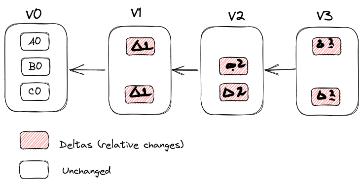
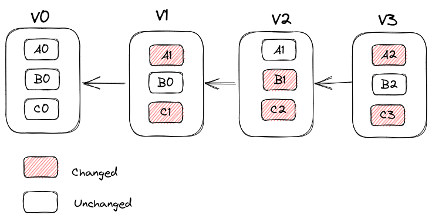

3.1. Getting Started#
3.1.1. Some Core Asepcts of Git#
3.1.1.1. Snapshots vs Deltas#
Most other version control systems save differences with delats - file based relative changes. Git on the other hand saves complete snaphot of the whole filesystem, but to save space unchnaged files aren’t saved again, but rather links to the previous unchanged version.


3.1.1.2. Most Operations are Local#
most operations like
browsing history
viewing changes between versions of files (diffs)
commiting
checking out a branch
…
are all local and therefore very fast.
3.1.1.3. Checksumming#
All files stored by git are checksummed. Since this functionality is built-in on lowest level of git, it is usually impossible to lose information. The checksumming mechanism is SHA-1 hash - a 40 character string calculated based on files or a directories contents. Entities are stored as checksum strings in git database, not by their file names. Git also generally only adds data, therefore it is usually impossible to lose information, enables free experimenation with the source code.
To querry the state of the different files in your repository use git status